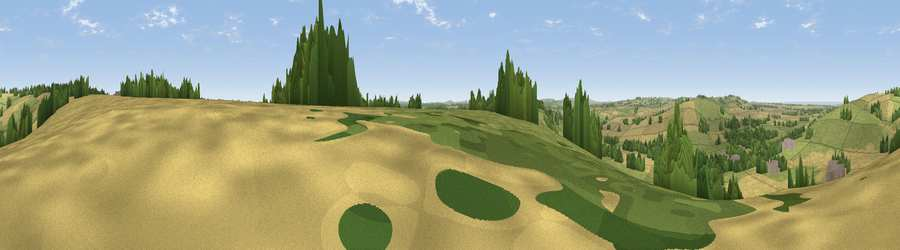

Viewpoint near Ogbourne St George
#27531 in England · top 52% of its area beats it · near Ogbourne St GeorgeThe view, rendered

A 360° render of this exact spot computed from the terrain model, tree cover and land cover — summer colours, afternoon light, calibrated against photographs of famous viewpoints. Real trees, hedges and buildings will differ in detail.
The panorama
Grey silhouette: terrain skyline in each direction (720 bearings, Earth curvature and refraction included). Dashed green: skyline with trees (+15 m) and buildings (+8 m) as obstacles. Blue strip: how far the ground is visible on each bearing.
Where the view opens
Wedge length = distance to the farthest visible ground on that bearing (vegetation-aware). Rings at 10, 25 and 50 km.
What fills the view
46% grassland · 42% cropland · 11% woodland · 1% built-up
Angular shares of the visible panorama (visual magnitude), not map area. Landscape diversity 0.45 (0–1 Shannon).
Key numbers
More beautiful places nearby
The staircase of upgrades: each row has a higher view potential than everything closer. Driving times are estimates from straight-line distance, calibrated against real road routing — check an actual route before setting out.
| Place | Direction | Drive | Score |
|---|---|---|---|
| Viewpoint near Ogbourne St George | WNW · 2 km | ~6 min | 64.9 |
| Viewpoint near Liddington | N · 6 km | ~13 min | 73.4 |
| Viewpoint near Liddington | N · 6 km | ~13 min | 74.4 |
| Martinsell viewpoint | SSW · 10 km | ~20 min | 77.3 |
| Viewpoint near Nympsfield | WNW · 50 km | ~71 min | 77.5 |
| Painswick Beacon | NW · 51 km | ~73 min | 79.6 |
| Viewpoint near Great Witcombe | NW · 52 km | ~73 min | 80.5 |
| Nottingham Hill | NNW · 59 km | ~81 min | 80.9 |
51.46301, -1.69803 · source: screening · position refined by local search. Computed location — check access rights before visiting.